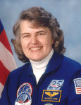

Lyndon B. Johnson Space Center
Houston, Texas 77058
|
National Aeronautics and Space Administration Lyndon B. Johnson Space Center Houston, Texas 77058 |
 |
Biographical Data |
||
SHANNON W. LUCID (Ph.D.)
nasa astronaut (former)
PERSONAL DATA: Born January 14, 1943, in Shanghai, China, but considers Bethany, Oklahoma, to be her hometown. Married to Michael F. Lucid of Indianapolis, Indiana. They have two daughters and one son, five granddaughters and one grandson. Dr. Lucid enjoys flying, camping, hiking and reading. Her parents, Mr. and Mrs. Joseph O. Wells, are deceased.
EDUCATION: Graduated from Bethany High School, Bethany, Oklahoma, in 1960; received a bachelor of science degree in chemistry from the University of Oklahoma in 1963 and a master of science and doctor of philosophy degree in biochemistry from the University of Oklahoma in 1970 and 1973, respectively.
AWARDS: Dr. Lucid is the recipient of numerous awards.
EXPERIENCE: Dr. Lucid's experience includes a variety of academic assignments, such as teaching assistant at the University of Oklahoma's Department of Chemistry from 1963 to 1964; senior laboratory technician at the Oklahoma Medical Research Foundation from 1964 to 1966; chemist at Kerr-McGee, Oklahoma City, Oklahoma, 1966 to 1968; graduate assistant at the University of Oklahoma Health Science Center's Department of Biochemistry and Molecular Biology from 1969 to 1973 and research associate with the Oklahoma Medical Research Foundation in Oklahoma City, Oklahoma, from 1974 until her selection to the astronaut candidate training program.
Dr. Lucid is a commercial, instrument and multi-engine rated pilot.
NASA EXPERIENCE: Selected by NASA in January 1978, Dr. Lucid became an astronaut in August 1979. She is qualified for assignment as a mission specialist on Space Shuttle flight crews. Some of her technical assignments have included the Shuttle Avionics Integration Laboratory (SAIL); the Flight Software Laboratory, in Downey, California, working with the rendezvous and proximity operations group; Astronaut Office interface at Kennedy Space Center, Florida, participating in payload testing, Shuttle testing and launch countdowns; spacecraft communicator (CAPCOM) in the Johnson Space Center (JSC) Mission Control Center during numerous Space Shuttle missions; Chief of Mission Support and Chief of Astronaut Appearances. A veteran of five space flights, Dr. Lucid has logged 5,354 hours (223 days) in space. She served as a mission specialist on STS-51G (June 17 to June 24, 1985), STS-34 (October 18 to October 23, 1989), STS-43 (August 2 to August 11, 1991), STS-58 (October 18 to November 1, 1993), and as a board engineer 2 on Russia's Space Station Mir (launching March 22, 1996, aboard STS-76 and returning September 26, 1996, aboard STS-79). Dr. Lucid was the first woman to hold an international record for the most flight hours in orbit by any non-Russian, and, until June 2007, she also held the record for the most flight hours in orbit by any woman in the world. From February 2002 until September 2003, Dr. Lucid served as NASA's Chief Scientist stationed at NASA Headquarters, Washington D.C., with responsibility for developing and communicating the agency's science and research objectives to the outside world. She returned to JSC in Fall 2003 and resumed technical assignments in the Astronaut Office. She served as a CAPCOM in the Mission Control Center for numerous Space Shuttle and International Space Station (ISS) crews, representing the Flight Crew Office and providing a friendly voice for dozens of friends and colleagues in space. Dr. Lucid retired from NASA in January 2012.
SPACE FLIGHT EXPERIENCE: STS-51G Discovery (June 17 to June 24, 1985) was a 7-day mission, during which the crew deployed communications satellites for Mexico (Morelos), the Arab League (Arabsat) and the United States (AT&T Telstar). They used the Remote Manipulator System (RMS) to deploy and later retrieve the SPARTAN satellite, which performed 17 hours of x-ray astronomy experiments while separated from the Space Shuttle. In addition, the crew activated the Automated Directional Solidification Furnace (ADSF), six Getaway Specials and participated in biomedical experiments. The mission was accomplished in 112 orbits of the Earth, traveling 2.5 million miles in 169 hours and 39 minutes. Landing was at Edwards Air Force Base (EAFB), California.
STS-34 Atlantis (October 18 to October 23, 1989) was a 5-day mission during which the deployed the Galileo spacecraft, on its journey to explore Jupiter, operated the Shuttle Solar Backscatter Ultraviolet Instrument (SSBUV) to map atmospheric ozone and performed numerous secondary experiments involving radiation measurements, polymer morphology, lightning research, microgravity effects on plants and a student experiment on ice crystal growth in space. The mission was accomplished in 79 orbits of the Earth, traveling 1.8 million miles in 119 hours and 41 minutes. Landing was at Edwards Air Force Base, California.
STS-43 Atlantis (August 2 to August 11, 1991) was a 9-day mission, during which the crew deployed the fifth Tracking and Data Relay Satellite (TDRS-E). The crew also conducted 32 physical, material and life science experiments, mostly relating to the Extended Duration Orbiter and Space Station Freedom. The mission was accomplished in 142 orbits of the Earth, traveling 3.7 million miles in 213 hours, 21 minutes and 25 seconds. STS-43 Atlantis was the eighth Space Shuttle to land at KSC.
STS-58 Columbia (October 18 to November 1, 1993). This record duration 14-day mission was recognized by NASA management as the most successful and efficient Spacelab flight flown by NASA. The STS-58 crew performed neurovestibular, cardiovascular, cardiopulmonary, metabolic and musculoskeletal medical experiments on themselves and 48 rats, expanding our knowledge of human and animal physiology both on Earth and in spaceflight. In addition, they performed 16 engineering tests aboard the Orbiter Columbia and 20 Extended Duration Orbiter Medical Project experiments. The mission was accomplished in 225 orbits of the Earth, traveling 5.8 million miles in 336 hours, 13 minutes and 1 second. Landing was at Edwards Air Force Base, California. In completing this flight, Dr. Lucid logged 838 hours and 54 minutes in space.
Dr. Lucid currently holds the United States single-mission spaceflight endurance record on the Russian Space Station Mir. Following a year of training in Star City, Russia, her journey started with liftoff at KSC on March 22, 1996, aboard STS-76 Atlantis. Following docking, she transferred to the Mir Space Station. Assigned as a board engineer 2, she performed numerous life science and physical science experiments during the course of her stay aboard Mir. Her return journey to KSC was made aboard STS-79 Atlantis on September 26, 1996. In completing this mission, Dr. Lucid traveled 75.2 million miles in 188 days, 4 hours, 0 minutes and 14 seconds.
FEBRUARY 2012
{kind=link}